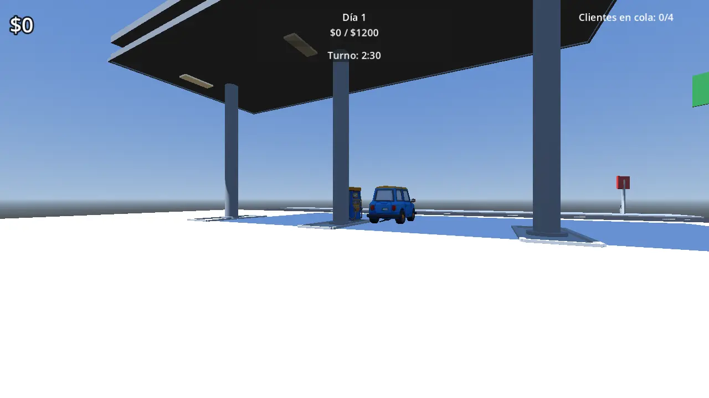
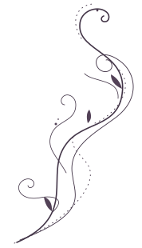
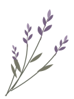
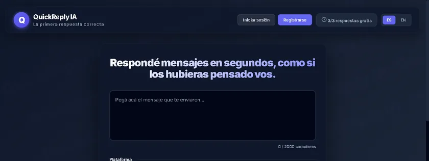

Godot · Prototipo
Gasolinería
Un turno al frente de una estación de servicio. En la Ruta 7, cada auto que llega al surtidor cuenta para la meta de ingresos del día.
ANDESOL · Ruta 7, km 342Desarrollador independiente de videojuegos.
Hago juegos web que se juegan en el navegador.




Un turno al frente de una estación de servicio. En la Ruta 7, cada auto que llega al surtidor cuenta para la meta de ingresos del día.
ANDESOL · Ruta 7, km 342
Juego de cañón y rebotes. Físicas propias, power-ups (fuego, multi-disparo, freeze, bomba), modo daily con semilla fija y leaderboard local.

Tycoon de jardín en JavaScript vanilla.

Minijuego de plataformas tipo speedrun en HTML/CSS/JS, con 10 niveles. Hecho en una jam de un día.

Plataforma freemium de generación de respuestas con IA. Rol: diseño de interfaz, desarrollo frontend y mantenimiento del sitio.
Aplicación web para registro, consulta y administración de alumnos. Desarrollado en equipo como proyecto técnico de 6° año en la E.E.S.T. N°5.
Hago juegos web que se juegan en el navegador: Ricochet Blitz, Growstead y Rush Frames se pueden jugar acá mismo.
algo de esto te reconoció.
Si querés probar mis juegos, hablar de un proyecto o simplemente de universos que todavía no terminaron de encenderse — escribime.
Desarrollador indie de videojuegos, con juegos web jugables en el navegador. Disponible para colaboraciones.
escribir